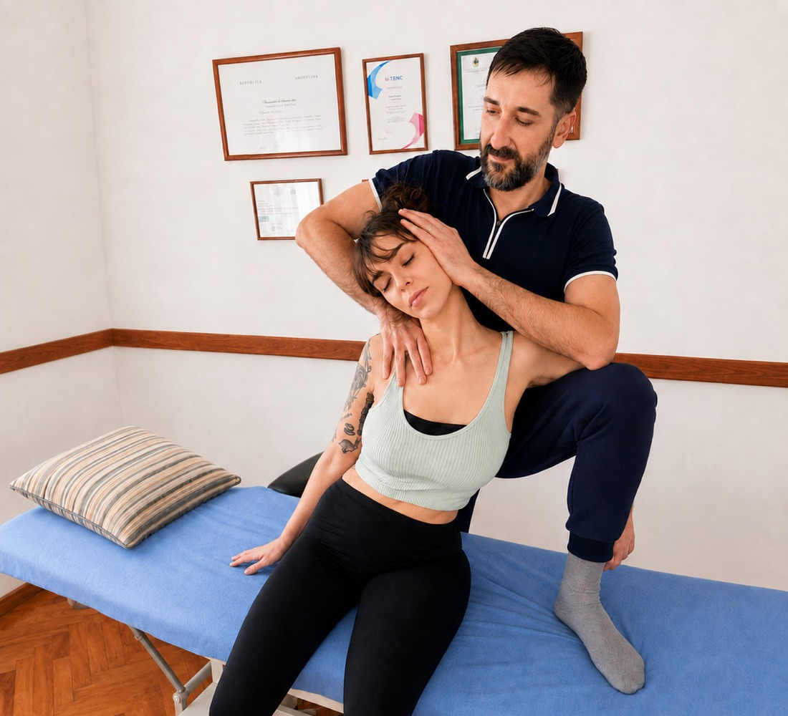

Todo lo que podemos hacer por vos.
Cada tratamiento es personalizado. Encontrá el área que mejor se adapta a lo que necesitás.

Osteopatía Integral
Abordaje global del cuerpo para recuperar el movimiento y el bienestar.
Osteopatía Integral
Abordaje global del cuerpo para recuperar el movimiento y el bienestar.
Dolor de columna vertebral
Tratamiento efectivo del dolor cervical, dorsal y lumbar.
- Cervicalgias y tortícolis recurrentes
- Dorsalgias y dolor interescapular
- Lumbalgias agudas y crónicas
- Contracturas musculares persistentes
- Alteraciones posturales
- Escoliosis
- Dolor irradiado a brazos o piernas
- Ciatalgia y cruralgia
- Limitación de la movilidad vertebral
- Dolor asociado al trabajo de oficina o sedentarismo
Lesiones y dolor musculoesquelético
Abordaje integral de las principales disfunciones articulares y musculares.
- Dolor de hombro
- Tendinopatías del manguito rotador
- Hombro congelado
- Epicondilitis (codo de tenista)
- Dolor de muñeca y mano
- Dolor de cadera
- Bursitis trocantérica
- Dolor de rodilla
- Síndrome femoropatelar
- Secuelas de esguinces
- Dolor e inestabilidad de tobillo
- Fascitis plantar
- Lesiones deportivas y sobrecargas musculares
Disfunciones de ATM
Tratamiento de trastornos de la articulación temporomandibular.
- Bruxismo
- Dolor mandibular
- Chasquidos articulares
- Dificultad para abrir o cerrar la boca
- Bloqueos mandibulares
- Tensión facial excesiva
- Dolor en oído sin causa otológica
- Cefaleas asociadas a ATM
- Dolor al masticar
- Sobrecarga muscular cervical relacionada
Cefaleas y migrañas
Abordaje de dolores de cabeza de origen mecánico y tensional.
- Cefaleas tensionales
- Migrañas
- Dolor occipital
- Cefaleas cervicogénicas
- Mareos asociados a tensión cervical
- Sensación de presión craneal
- Dolor relacionado con estrés y bruxismo
- Tensión muscular de cuello y hombros
Lesiones discales
Abordaje conservador de patologías discales y compresiones nerviosas.
- Hernias de disco cervicales y lumbares
- Protrusiones discales
- Ciatalgia
- Cruralgia
- Radiculopatías
- Compresiones nerviosas periféricas
- Hormigueos y adormecimientos
- Dolor irradiado a miembros superiores e inferiores
- Limitación funcional por lesión discal
- Trastornos mecánicos asociados a la columna
Disfunciones viscerales
Tratamiento de restricciones de movilidad y tensiones viscerales que pueden influir en el sistema musculoesquelético.
- Reflujo gastroesofágico
- Hernia hiatal
- Distensión abdominal
- Trastornos digestivos funcionales
- Estreñimiento
- Adherencias postquirúrgicas
- Dolor torácico o abdominal de origen mecánico
- Restricciones diafragmáticas
- Alteraciones respiratorias funcionales
Pelvis y Sistema Genitourinario
Abordaje de tensiones y molestias en la zona pélvica y lumbar.
- Dolor pélvico
- Dolor menstrual
- Menstruaciones dolorosas
- Dolor o molestias durante las relaciones sexuales
- Sensación de presión o pesadez pélvica
- Dolor lumbar asociado al período
- Molestias pélvicas durante el embarazo
- Dolor lumbar durante el embarazo
- Molestias o dolor después del parto
- Cicatrices abdominales o de cesárea
- Molestias pélvicas persistentes
Reeducación Postural Global (RPG)
Método tres escuadras. Corrección postural profunda y duradera.
Reeducación Postural Global (RPG)
Método tres escuadras. Corrección postural profunda y duradera.
RPG General
Tratamiento basado en posturas de estiramiento progresivo para liberar cadenas musculares tensas.
Problemas posturales frecuentes
- Escoliosis y cifoescoliosis
- Hombros adelantados
- Genu valgo o varo (rodillas)
"La RPG busca identificar y tratar la causa de las compensaciones posturales, no solo los síntomas visibles, devolviendo la armonía al esquema corporal."
RPG para deportistas
Mejora de la elasticidad y prevención de lesiones por sobrecarga o vicios posturales en el entrenamiento.
RPG en niños y adolescentes
Control del crecimiento y corrección de malos hábitos durante la etapa de desarrollo escolar.
Neurorehabilitación
Tratamiento especializado para afecciones del sistema nervioso.
Neurorehabilitación
Tratamiento especializado para afecciones del sistema nervioso.
Enfermedades centrales
Abordaje de secuelas de ACV, Parkinson, Esclerosis Múltiple y lesiones medulares.
Enfermedades neuromusculares
Tratamiento para Distrofias, ELA en etapas tempranas y Miopatías.
Lesiones periféricas
Neuropatías, parálisis faciales y lesiones traumáticas de nervios.
Equilibrio y Marcha
Reeducación del patrón de marcha y prevención de caídas.
Rehabilitación funcional
Entrenamiento de actividades de la vida diaria para mayor autonomía.
Atención domiciliaria
Posibilidad de tratamiento en el hogar para pacientes con movilidad reducida.
Terapia Craneosacral
Abordaje suave y manual para liberar tensiones del sistema nervioso.
Terapia Craneosacral
Abordaje suave y manual para liberar tensiones del sistema nervioso.
Cefaleas y trastornos craneales
Técnicas sutiles para aliviar migrañas y neuralgias del trigémino.
Trastornos de ATM
Relajación profunda de la musculatura masticatoria y fascias craneales.
Estrés y sistema nervioso
Regulación del sistema autónomo para combatir ansiedad e insomnio.
Mareos y equilibrio
Abordaje integrador para síndromes vertiginosos tensionales.
Recuperación postraumática
Libre de tensiones generadas por accidentes (latigazo cervical).
Embarazo y posparto
Acompañamiento suave para los cambios físicos de la gestación.
Osteopatía Deportiva
Recuperación, rendimiento y prevención para deportistas.
Osteopatía Deportiva
Recuperación, rendimiento y prevención para deportistas.
Lesiones deportivas
- Desgarros y distensiones musculares
- Esguinces articulares recidivantes
- Sobrecargas por entrenamiento intenso
Rendimiento y prevención
- Optimización del gesto técnico
- Preparación pre-competencia
- Planificación de vuelta al campo
Vendaje Neuromuscular (Kinesiotaping)
Complemento terapéutico para aliviar el dolor y acelerar la recuperación.
Vendaje Neuromuscular (Kinesiotaping)
Complemento terapéutico para aliviar el dolor y acelerar la recuperación.
¿Cuándo puede ayudarte?
- Dolor muscular o articular
- Lesiones deportivas
- Tendinitis y sobrecargas
- Esguinces
- Dolores cervicales y lumbares
- Recuperación postraumática
- Edemas e inflamación
¿Cómo lo aplicamos?
- Siempre como complemento del tratamiento, nunca de forma aislada
- Adaptado a cada zona y cada paciente según la evaluación clínica previa
"No todos los pacientes necesitan vendaje neuromuscular. Lo indicamos únicamente cuando aporta un beneficio real dentro del tratamiento."